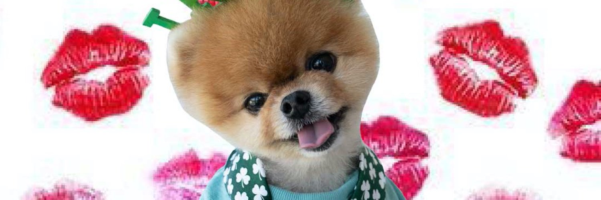

Jiffpom
@jiffpom
Sky-blue sweaters. Lipstick kisses. The Los Angeles Pomeranian who ran into the record books on two paws — and onto Solana as JIFFPOM.
- 6.56s10m on hind legs
- 7.76s5m on front paws
- POMLos Angeles

Solana meme token
JIFFPOM
Jiffpom is the Pomeranian with the sky-blue smile and the lipstick kisses. JIFFPOM brings that face to Solana — community first, instantly recognizable, and built for meme-token speed.
01
The brand
A famous face, a fast pair of paws, and a ticker.
Sky-blue sweaters. Lipstick kisses. The Los Angeles Pomeranian who ran into the record books on two paws — and onto Solana as JIFFPOM.
02
The icon
Jiffpom is the Pomeranian with the tongue-out grin, the tiny outfits, and two Guinness World Records for running on two paws. On Solana he is JIFFPOM.
The project is built around that recognizable face, community participation, and the playful culture of Solana meme tokens.
03
The seal
4tWei1qS8VvuogrFXQfpTSbfYquZEN3qPRtkw4rLpump
04
The offering
Fair launch on pump.fun. No team bag. No tax. Just JIFFPOM.
100%
Zero team allocation.
1B
1,000,000,000 JIFFPOM
0%
Buy and sell. Nothing taken.
LP
Bonding curve, then Solana LP.
05
The move
Install Phantom or any Solana wallet and fund it with SOL.
Open the official JIFFPOM page and connect.
Buy JIFFPOM. Match the CA on this site.
Follow Jiffpom on Instagram, X, and Telegram.